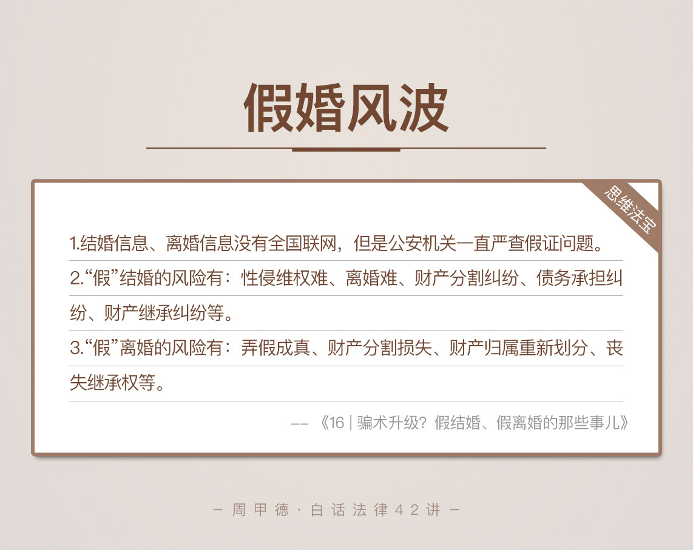

- 00 开篇词 这年头，你真应该懂点法律常识.md.html
- 01 “老周，我想知道” 常见法律认知盲区（一）.md.html
- 02 “老周，我想知道” 律师就在你身边（二）.md.html
- 03 “老周，我想知道” 律师就在你身边（三）.md.html
- 04 “老周，我想知道” 律师就在你身边（四）.md.html
- 05 创业未捷老板跑，社保工资哪里讨？.md.html
- 06 保密还是“卖身”，霸王条款怎么看？.md.html
- 07 编造流言蹭热度？看守所里降温度！.md.html
- 08 合同在手欠款难收，报警有用吗？.md.html
- 09 致创业：谁动了我的股权？.md.html
- 10 又见猝死！工“殇”究竟是不是工伤？.md.html
- 11 期权的“前世今生”.md.html
- 12 裁员面前，你能做的还有什么？.md.html
- 13 抄袭、盗图为什么做不得？.md.html
- 14 加班、工资、休假，你知道多少？.md.html
- 15 受贿原来这么“容易”.md.html
- 16 今天你用“VPN”了吗？.md.html
- 17 漏洞在眼前，可以悄悄破解吗？.md.html
- 18 “爬虫”真的合法吗？.md.html
- 19 非法集资到底是个啥？.md.html
- 20 黄色网站？不仅仅是“黄色”罪名.md.html
- 21 谁修改了我的积分资产？.md.html
- 22 外挂真能大吉大利吗？.md.html
- 23 如何看待“从删库到跑路”？.md.html
- 24 “伪基站”是你的避风港吗？.md.html
- 25 “网络诈骗”真的离你很远吗？.md.html
- 26 智斗中介：“北上广”租房图鉴.md.html
- 27 买买买！买房的“避坑”指南.md.html
- 28 闪婚又闪离，彩礼怎么理？.md.html
- 29 离婚还想和平？你要这么做.md.html
- 30 遗产继承的爱恨情仇.md.html
- 31 骗术升级？假结婚、假离婚的那些事儿.md.html
- 32 孩子学校受伤，谁之过？.md.html
- 33 如何让欠债还钱真正“天经地义”？.md.html
- 34 从透支到盗刷：人人须知的银行卡纠纷.md.html
- 35 远离“套路贷”的套路大全.md.html
- 36 危险！酒驾为什么被罚那么重？.md.html
- 37 老人倒地，“扶”“不服”？.md.html
- 38 “能动手就别吵吵”，代价你真的知道吗？.md.html
- 39 发生交通事故，如何处理？.md.html
- 40 交通事故综合法宝.md.html
- 41 婚姻家庭综合法宝.md.html
- 42 买卖房屋综合法宝.md.html
- 一键直达 法律专栏“食用”指南.md.html
- 加餐 “新冠肺炎”影响下，17个常见法律问题解答.md.html
- 结束语 法律，不会终止的篇章.md.html
- 捐赠
31 骗术升级？假结婚、假离婚的那些事儿
有这么个说法。世界上最悲催的离婚，莫过于假离婚成真，财产归你，债务归我。而世界上最悲催的结婚，莫过于假结婚成了真，财产一半给别人，离不了假婚，结不了真婚。
前面我们一起学习了关于结婚、离婚的知识，但在现实生活中，还存在着这么一类现象，也就是我开头所说的假结婚、假离婚。这种说法你肯定不陌生，听过最多的，大概就是为了买房假离婚的故事。似乎是挺精明的法子，完美钻了法律的漏洞。
不过，你是否还听过后续的故事呢？比如，明明说好的假离婚，一方却在外面有了人，悄悄重新结了婚。再比如，明明说好要再买套房，却有一方沉迷赌博，把好几年的血汗钱都白白送了人。
真真假假，黑白难分。但对另一方来说，却是人财两空的结局。这大概可以算得上是很高级的骗术了吧，也应了那句歌词：我最深爱的人，却伤害我最深。为了帮你打消这种侥幸心理，今天呢，我就来详细说说，关于假结婚、假离婚的问题和风险。
其实我们说的真假，无非是法律上的真假和意愿上的真假。法律上看合法证件，真证同时也是真意愿的，自然就是我们所说的正常婚姻。而假证问题和真证假意愿的情况，就是我想说的重点了。
假证件的结婚离婚
首先，我先给你说一个让我触动很大的假证结婚案子。
去年夏天那会儿，也就是2017年6月份左右，我接手了这么一个案子。一个BAT的高级工程师小李，因为伪造国家机证件罪被判刑。看起来八杆子打不着的罪名，到底咋回事呢？
原来啊，小李跟你我一样，都是北京摇号大军的一员。摇了好几年，仍然摇不到号，自然也就不能获得小客车指标，没法儿用车。这时，他的朋友出了一招儿，也就是我们熟悉的套路，找一个有车不用的女生，假证结婚，然后把车过到小李名下，小李出一笔钱就行了。
小李还真就照做了。他找了个符合条件的女性朋友，然后按照公共厕所墙上的小广告，找人办了假结婚证、假户口本、假离婚证等六本假证件。然而，后来小李到车管所办理手续时，被公安机关发现并抓了，接着就是我们开头的情节了。
办假证，不用多说，你肯定知道违法，小李他们也不是不知道。但为什么还是那么做了呢？这就是一些人的自作聪明了，他们自以为比别人多知道了一点东西，就想加以利用，却不知道更多的东西，也就是真正的风险所在。
小李他们听说的是，结婚信息、离婚信息没有全国联网。比如说你拿着湖北的结婚证，到了北京后，压根儿查不出来，而公安机关一般也不看结婚证的真假。但是，事实真的如此吗？
婚姻信息没有全国联网是真，但公安机关不查？不好意思。人民银行、公安部、民政部、工信部、发改委在内的31个国家部门，已经联合发表了一份文件，叫《关于对婚姻登记严重失信当事人开展联合惩戒的合作备忘录》，要求的正是加大对婚姻登记失信行为的惩罚。
这也意味着，伪造结婚证、离婚证等证件，或者带着伪造证件（比如伪造的身份证）去办理结婚、离婚，将会在应聘国家公职人员，出任金融机构高管以及申请贷款、补贴等方面受到严重限制。
你看，小李他们都是高学历、高智商的聪明人，也可以算是世俗意义上的好人，可就是干了这么个荒唐事儿。如果不是亲自办案，我也想不到，这样的小聪明会被用在法律上。
真证件、假意愿的结婚离婚
上面我们说的是假证的情况，其实身边人里，无知或者自以为是到去挑战假证的并不太多，更常见的可能是，我们所说的真证件、假意愿的情况，也就是带引号的“假”结婚、离婚问题。
我们都知道，在法律上只有真证、假证的问题，其实并不存在结婚和离婚的真假之说。法律上领了啥证，就是啥关系，证件到手，相应的法律后果就产生了。不管你心里怎么想的，出发点是怎样的，合法就是最大的事实。
前几天就有朋友打电话咨询，20多岁的女生和60多岁的人到车管所办理过户手续，遇到了障碍。虽然有合法结婚证，但车管所的工作人员觉得他们不是真夫妻，因此拒绝办理。在我看来，只要结婚证是国家发的，双方也都认可婚姻关系，车管所并不能因为主观判断而拒绝办理。
但是，车管所的担心也是不无道理的。毕竟，“假”结婚的风险你真的知道吗？
“假”结婚的风险
领了真结婚证，但主观意愿上是假的，这种婚姻，可能会遇到下列这几种问题。
1.性侵维权难
在领证期间，一旦哪一方受到对方的性侵，尤其是相对占居下风的女性被侵犯，该怎么办呢？虽说真正的夫妻关系里，也存在婚内强奸这么一说，但是假结婚的前提下，覆盖问题更广，获取定罪的证据也会异常艰难。
2.离婚难
一旦完成约定后，对方不同意离婚了，该怎么办呢？因为没有合法依据，对方反悔或者搞失踪，你就只能诉讼离婚，然后把自己拖入漫长的诉讼中了。
3.财产分割纠纷
一旦某一方买了房子车子，怎么办？婚后买房一般属于夫妻共同财产，在离婚时，对方可以要求按照夫妻共同财产来对待。
4.债务承担纠纷
一旦某一方在婚姻期间借了外债，该怎么办呢？一般情况下，婚后借款属于夫妻共同债务，需要共同还债。那么，对方目的是不是骗你来一起背债，也并不好说。
5.财产继承纠纷
一旦婚姻期间，某一方突然死亡，怎么办？那死者名下的财产，就可能会被另一方继承。即使是婚前财产，另一方也是我们前面讲到过的，法定继承人。那么对于死者家属来说，更是雪上加霜吧。
总之，“假”结婚的法律风险，远远超出你的想象，法律的空子不是那么好钻的。
“假”离婚的风险
领了离婚证，双方就不存在婚姻关系了，不能异想天开以为还住一块儿就没事。即使住在一起，也只能叫同居关系，而不是法律保护的夫妻关系。所谓的“假”离婚，可能遇到的问题有这么几种。
1.弄假成真
我一开始提到的所谓“高级骗术”，就是这样精心策划的离婚案件。有些人以家庭利益为出发点，诱骗配偶签下离婚协议，等到真的领离婚证后，就原形毕露，坚决不复婚了。这种情况，你连个维权路径都没有，不管拿什么证据，婚离了就是离了，只要对方不同意复婚，都是白费力。
2.财产分割损失
真心为了家庭考虑的人，一般不会在意“假”离婚的财产分割问题，但保不准别有用心的一方会怎么想。有些“假”离婚会约定，把财产都给某一方，另一方因为相信会马上复婚，也会同意。一旦达成财产分割协议，领了离婚证，法律效力就很难推翻了。
3.财产归属重新划分
离婚协议里，对财产归属的约定，会随着离婚证而生效。即使未来双方复婚，但如果没有新的协议，以前离婚时的约定仍然有效，当时约定的属于谁的财产，就属于婚前个人财产了，这就改变了财产归属问题。
比方说，两人离婚时，为了方便，协议上约定把两人的全部财产300万都给女方，那么复婚时，这300万就是女方的婚前个人财产，而不再是夫妻共同财产了。这个问题如果没有重视，可能就埋下了争吵和纠纷的隐患。
4.丧失继承权
“假”离婚期间，一旦某一人死亡，这个人的遗产就跟另一半无关了。本来应该是夫妻共同财产，这下却连继承权都没了，还能找谁说理去呢？
你看，离婚需谨慎，“假”离婚更是不能，一不小心，就是竹篮打水一场空。
无法避免的假婚？
也许，还是会有人问，老周，我实在没办法啊，不婚主义要应付家里，或者房子户口问题特别棘手。这种情况下，虽然我仍不鼓励这种行为，主张坦诚解决。但是出于律师的责任，我还是要给无法避免的人，敲敲警钟。
首先，千万不能办假证。假证的后果我已经说过了，一不小心就是刑法里的伪造、变造、买卖国家机关公文、证件、印章罪。你花了100块在网上买了证，却把自己送进大牢，就俩字，不值。送给那些有过假证念头的人一句话：劝君莫伸手，伸手必被抓。
其次，必备合法的协议书。证是真的，但不代表真实意愿，就一定要签好合法协议，把双方办证的具体背景情况、家庭财产情况等记录清楚，双方也要签字认可。婚姻关系虽然“一离不复回”，但不至于人财两空，仍能通过协议拿到应得的财产。
另外，办证前要洞察政策界限。很多假结婚、离婚都是为了获得政策红利，但政策是有可能调整的。比如说，很多城市就出台政策，离婚后一年内或两年内买房，要求认房又认贷，就连夫妻关系存续期间的也都要算上。一旦这种情况出现，可不就白离了吗？
还是那句话，不要因小失大，丢了西瓜去捡芝麻。
思维“法”宝
最后，我再来总结一下，除了假结婚、离婚，生活中特别容易轻视的两个问题。
第一，丢证以后怎么办？
身份证、驾驶证、结婚证等常用证件丢失后，怕麻烦或者为了急用，选择了假证，肯定是违法的，很容易被识破，还不能解决问题。
事实上，现在身份证可以异地办理，并且为了解决急用问题，还可以先去办理临时身份证。临时身份证和身份证有同等的作用，有的快一些，当天就能拿到，完全不必铤而走险。
第二，用他人身份证开房可以吗？
不知道你留意过没，现在住酒店，前台都要求必须出示本人身份证，不然不给办理。很多人不以为意，但如果用别人的身份证入住，一旦被发现，最轻也是治安处罚。现在有太多乱用别人身份证开房、被治安拘留的案例了。
所以，身份证不能乱用，捡来的身份证更不能用。万一捡到的是通缉犯的证件，岂不是有理说不清了吗？等待你的，可能就是漫长的调查和在拘留所时光了。

今天的内容我就讲到这里。从“假”意愿的结婚、离婚，到证件的真真假假，其实想传达的还是相同的法律思维：一要看法（证件），二要看合同（协议约定）。所有你发现的漏洞，基本都有人踩过雷、付出过代价。遵纪守法，看着容易，可是跟人心的贪婪相比，做起来很难。
对于今天的内容，你是否有过类似的经验经历呢？你对于结婚离婚、以及假结婚、假离婚又都是怎样的看法呢？欢迎留言与我分享，写下你的见解和疑惑。也欢迎把这篇文章分享给你亲朋好友，法律不踩雷，是最简单的关爱。
© 2019 - 2023 Liangliang Lee. Powered by gin and hexo-theme-book.